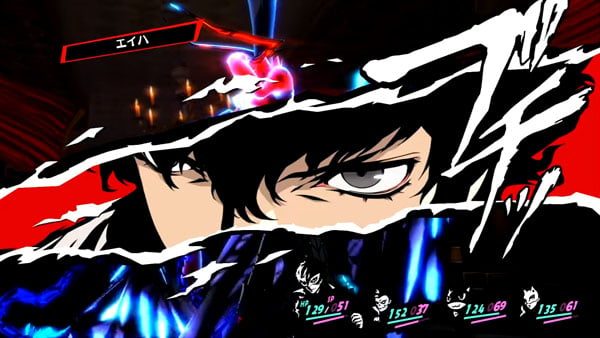
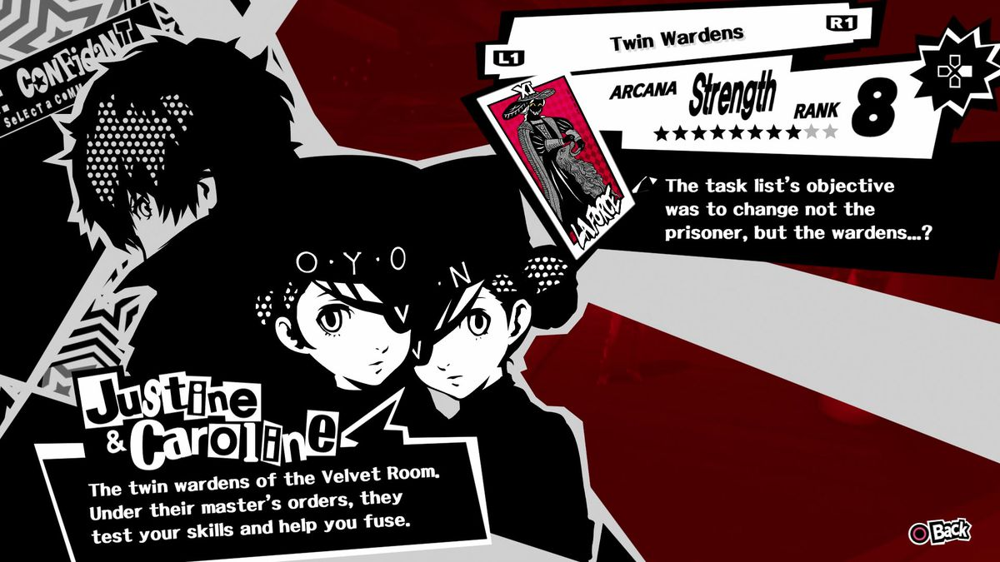
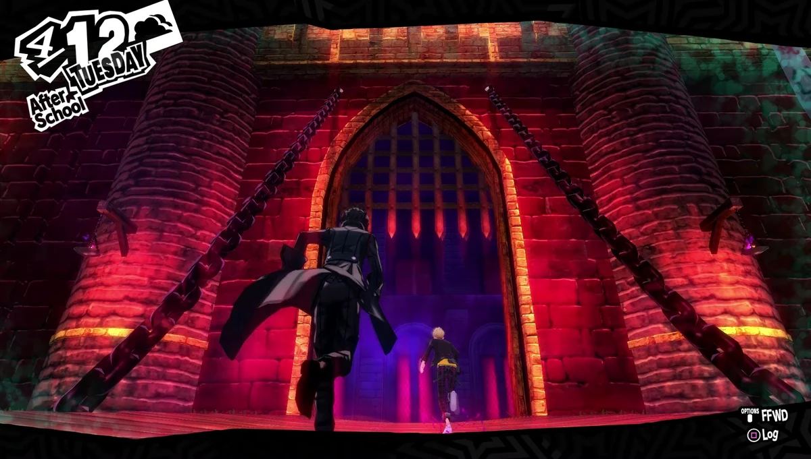
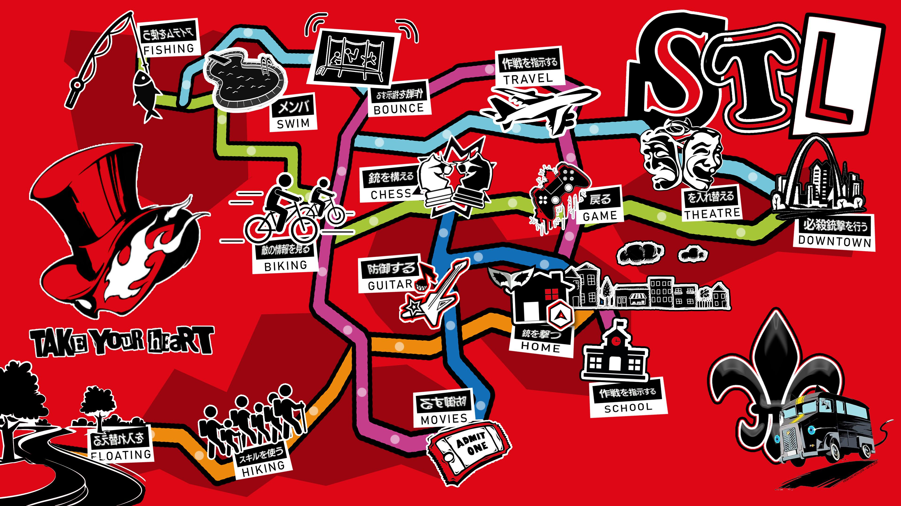
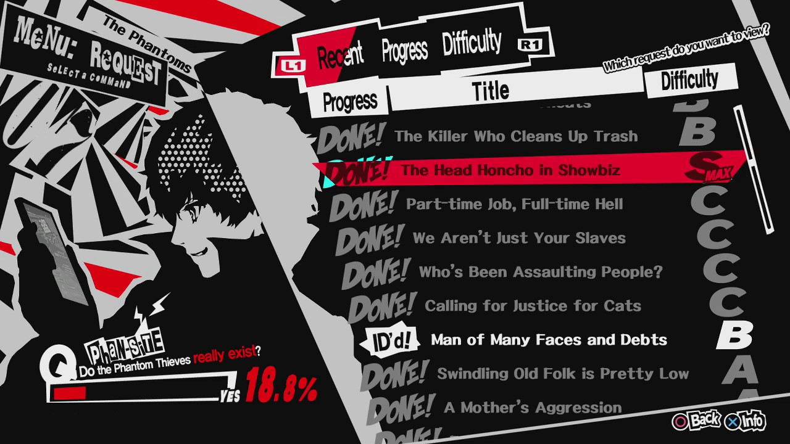
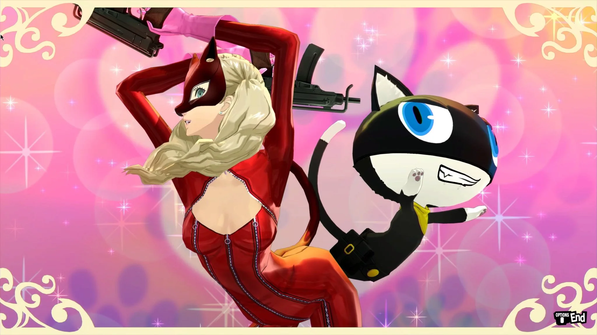

Features
Summon Personas
Persona 5 is full of different Personas, each with their own abilities and powers to make them unique. Personas can be obtained through the various fusion techniques or through capturing Shadows in Palaces and Mementos.
Confidants
Confidants are Persona 5's version of Social Links. Building relationships with your confidants will give you more abilities, bonuses, and items as you progress and they are a cornerstone of the Persona series.
Palaces
There are a number of Palaces in Persona 5, each with their own puzzles, unique challenges, and increasing difficulties. A Palace is a manifestation of "distortion," strong negative or corrupt thoughts that warp the perceptions of people into a hazard for themselves and others.
Explore Tokyo
The world of Persona 5 is perhaps the series' biggest yet, introducing players to bustling downtown Tokyo and other major metropolitan areas.
Take Their Hearts
There are many side quests/requests that you'll encounter. These requests have you go into Mementos and track down lesser Shadows who are causing problems for people without being so distorted that they create Palaces.
Showtime!
The new release of Royal introduces a new feature: Showtime attacks are cool combination moves that involve two of the Phantom Thieves teaming up to unleash a powerful attack on a single opponent.
Thieves of Hearts
Ryuji Sakamoto a.k.a. Skull
He is a student at Shujin Academy and a former track star who lives a double life as a Phantom Thief. He is the protagonist's right-hand man and the Phantom Thieves' charge commander.
Ann Takamaki a.k.a. Panther
She is a student at Shujin Academy who lives a double life as a Phantom Thief. After ridden with guilt over her helplessness to protect others and herself, she would sacrifice herself to support her friends while facing, overcoming and promising not to return back to her old self.
Yusuke Kitagawa a.k.a. Fox
He is one of the main characters, and is an eccentric artist who works under the tutelage of Ichiryusai Madarame, a prestigious artist, who becomes a target of the Phantom Thieves after hearing that he was abusing his students, and that he had killed Yusuke's mother.
Futaba Sakura a.k.a. Oracle
She is the Navigator of the Phantom Thieves from Persona 5. She was a shut-in before meeting the Phantom Thieves, who does not attend school and rarely, if ever, leaves her house.
Morgana a.k.a Mona
He is a major playable character of Persona 5. He is a mysterious being with ties to Mementos. He doesn't know who he is, and seeks answers to restore his memories. Morgana acts as their second-in-command, mascot and guide.To his teammates, he's also known as Mona during missions.
Makoto Nijima a.k.a Queen
She is a playable character in Persona 5. She's the student council president of Shujin Academy and younger sister of Sae Niijima who lives a double life as a Phantom Thief.
Haru Okumura a.k.a Noir
Haru Okumura is a playable character from Persona 5. She is a wealthy girl who attends Shujin Academy, and lives a double life as a Phantom Thief. She is the only daughter of Kunikazu Okumura, the Thieves' fifth major target.
Sumire Yoshizawa a.k.a Violet
Sumire Yoshizawa is a playable character from Persona 5 Royal. She is a first-year transfer student at Shujin Academy and a talented gymnast who gets involved with the Phantom Thieves of Hearts. She is overcome with guilt after her older sister Kasumi gives her life to save her. For most of the game, thanks to Takuto Maruki's cognitive intervention, she believes she is her sister Kasumi.
Goro Akechi a.k.a Crow
Goro Akechi is a playable character from Persona 5. He is a public celebrity, touted by his fans and the media as the second coming of the detective prince (after the first appeared in Persona 4), and is investigating the mysterious Phantom Thieves of Hearts case sensationalizing Japan.